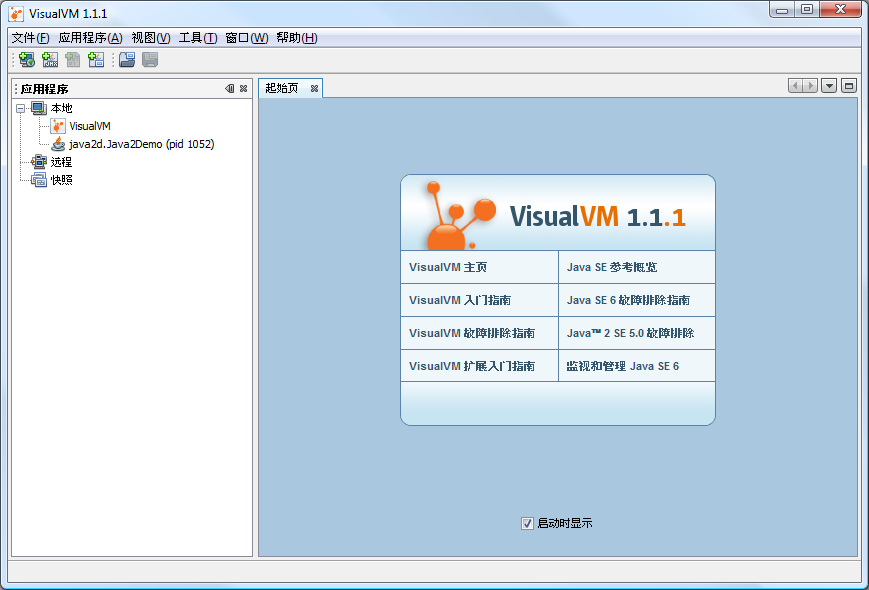

VisualVM 是一个工具，它提供了一个可视界面，用于查看 Java 虚拟机 (Java Virtual Machine, JVM) 上运行的基于 Java 技术的应用程序（Java 应用程序）的详细信息。VisualVM 对 Java Development Kit (JDK) 工具所检索的 JVM 软件相关数据进行组织，并通过一种使您可以快速查看有关多个 Java 应用程序的数据的方式提供该信息。您可以查看本地应用程序以及远程主机上运行的应用程序的相关数据。此外，还可以捕获有关 JVM 软件实例的数据，并将该数据保存到本地系统，以供后期查看或与其他用户共享。
为了能充分利用所有的 Java VisualVM 功能，应运行 Java Platform, Standard Edition (Java SE) 版本 6。
在下载 VisualVM zip 归档文件并将其解压缩到本地系统之后，导航至展开的归档文件的 bin 目录，然后双击 VisualVM 可执行文件，或在命令 (shell) 提示符下键入以下内容：
visualvm
首次启动 VisualVM 时，系统将提示您接受许可证协议。
在 Windows 上，VisualVM 用户目录的缺省位置为：
C:\Documents and Settings\<USER>\Application Data\.visualvm\FCS
要查找 VisualVM 用户目录的位置，请从主菜单中选择“帮助”>“关于”，然后在“关于 VisualVM”窗口中单击“详细信息”。
在启动 VisualVM 后，将打开 VisualVM 主窗口。VisualVM 主窗口分为两个窗口。
首次启动 VisualVM 时，“应用程序”窗口显示在主窗口的左侧，“起始页”显示在主窗口的右侧。“起始页”包含指向 VisualVM 文档 Web 页和其他资源的链接。
注意：缺省情况下，每次启动 VisualVM 时都将打开“起始页”。通过从主菜单中选择“帮助”>“起始页”，可以随时打开“起始页”。此外，还可以通过取消选中“启动时显示”复选框隐藏“起始页”。
启动应用程序后，将在 VisualVM 主窗口的左侧打开“应用程序”窗口。“应用程序”窗口是浏览正在运行的应用程序详细信息的主入口点。“应用程序”窗口采用树结构，以便您可以快速查看本地计算机和任何已连接的远程计算机上运行的应用程序。您还可以从“应用程序”窗口中访问核心 dump (Solaris/Linux) 和保存的快照。
右键单击“应用程序”窗口中的某个节点将打开一个弹出式菜单，通过该菜单可以执行与该节点相关的操作，其中包括打开应用程序标签、生成堆 dump 和线程 dump，以及在主窗口中打开快照。
有关如何使用“应用程序”窗口查看和保存数据的更多详细信息，请参见以下页面：
主窗口中显示有关应用程序的详细信息。在查看有关应用程序的数据时，主窗口中的每个标签表示一个应用程序，这使您可以轻松查看和导航数据。保存的线程 dump 和堆 dump 也可以在主窗口中打开。
有关主窗口中可以显示的应用程序数据的信息，请参见以下页面：
通过使用“插件”管理器安装由“VisualVM 插件中心”提供的插件，可以向 VisualVM 添加功能。您也可以开发自己的插件，然后将其添加到更新中心来扩展 VisualVM 的功能。
例如，安装 VisualVM-MBeans 插件可以向应用程序标签中添加 "MBeans" 标签，通过此标签，可以在 VisualVM 内监视和管理 MBeans。
安装 VisualVM 插件：

有关创建 VisualVM 插件的更多信息，请参见以下文档：